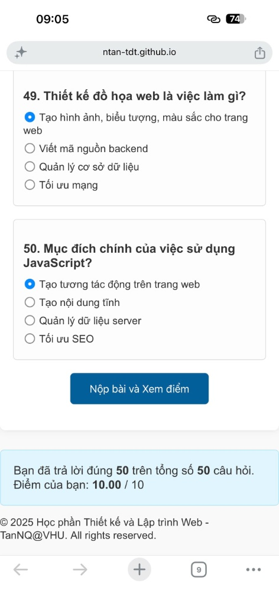
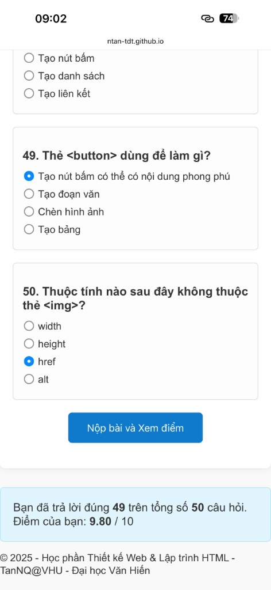

Kết quả thực hành Bài tập 20 - Bài kiểm tra trắc nghiệm Web
Kết quả làm bài trắc nghiệm 50 câu trên hệ thống ntan-tdt.github.io của sinh viên Đặng Anh Tiến (MSSV: 231A010532).


Học phần: Lập trình Web (HTML5 - CSS3 - JavaScript)
Kết quả làm bài trắc nghiệm 50 câu trên hệ thống ntan-tdt.github.io của sinh viên Đặng Anh Tiến (MSSV: 231A010532).

